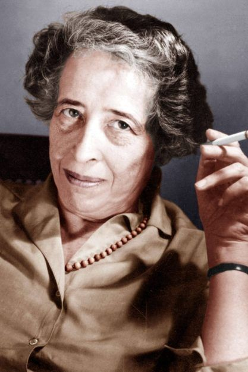

Who Was Hannah Arendt?
Hannah Arendt (1906–1975) was a German-born political thinker, philosopher, writer, and one of the most important intellectual figures of the twentieth century. Her work examined some of the most disturbing political events of modern history, including totalitarianism, antisemitism, dictatorship, mass society, violence, revolution, and the destruction of political freedom.
Hannah Arendt's philosophy is especially concerned with the conditions under which human beings can live together in a shared world. Rather than beginning with an isolated individual, Arendt emphasized human plurality: people are equal in their humanity, yet every individual is also distinct and capable of beginning something new through words and actions.
She is best known for The Origins of Totalitarianism, The Human Condition, and Eichmann in Jerusalem. These works developed influential ideas about totalitarian domination, labor, work, action, political freedom, the public realm, moral responsibility, and the controversial concept of the banality of evil.
Arendt remains important because her philosophy does not treat politics merely as the struggle for power or the management of economic interests. For her, politics can become a space where people appear before one another, speak, act, deliberate, disagree, and collectively create a shared world. Her ideas continue to influence political philosophy, ethics, history, sociology, law, and human rights theory.
Hannah Arendt: Quick Facts
- Full name — Hannah Arendt
- Born — October 14, 1906
- Died — December 4, 1975
- Nationality — German-born American
- Philosophical tradition — Political philosophy, phenomenology, existential thought, and civic republicanism
- Major fields — Political philosophy, ethics, philosophy of history, political theory, and philosophy of mind
- Major subjects — Totalitarianism, freedom, action, power, violence, plurality, human rights, judgment, and evil
- Most famous concept — The banality of evil
- Major political work — The Origins of Totalitarianism
- Major philosophical work — The Human Condition
- Famous political categories — Labor, work, and action
- Major late work — The Life of the Mind
Hannah Arendt's Early Life and Education

Hannah Arendt was born on October 14, 1906, in Linden, near Hanover, Germany, into a German-Jewish family. Although she was born in Hanover, she spent much of her childhood in Königsberg, where she grew up amid the political and intellectual upheavals of the early twentieth century. Her formative years unfolded against the background of the First World War, the collapse of the German Empire, the instability of the Weimar Republic, and the growing political conflicts that would eventually contribute to the rise of National Socialism.
Arendt began studying philosophy in 1924 and attended the universities of Marburg, Freiburg, and Heidelberg. Her teachers included Martin Heidegger, Edmund Husserl, and Karl Jaspers, placing her in direct contact with phenomenology and some of the most important philosophical movements of twentieth-century Germany. Under Jaspers at Heidelberg, she completed her doctoral dissertation on the concept of love in the thought of Augustine, receiving her doctorate in 1928.
Her early academic work was concerned primarily with philosophical and intellectual questions rather than with political theory in the narrow sense. Yet the political crisis of Germany increasingly made it impossible for her to regard thought as entirely separate from the world of public events. The Nazi seizure of power in 1933 transformed both her personal circumstances and the direction of her intellectual life, confronting her directly with persecution, antisemitism, exile, and the destruction of political freedom.
In 1933, after being briefly arrested by the Gestapo in connection with research and activities relating to antisemitism, Arendt fled Germany. She spent the following years in Paris, where she worked with Jewish refugee organizations and assisted efforts connected with the migration of Jewish children. After the outbreak of the Second World War and the German invasion of France, she eventually escaped Europe and arrived in the United States in 1941. Her experiences of exile, statelessness, and political catastrophe became central to her later reflections on human rights, citizenship, belonging, and the conditions required for a genuinely political life.
Why Is Hannah Arendt Important?
Hannah Arendt is important because she developed new categories for understanding political events that appeared to exceed traditional concepts of tyranny, dictatorship, law, and moral responsibility. The Nazi regime, the Holocaust, Stalinism, and the systems of terror that emerged during the twentieth century forced political thinkers to ask whether older philosophical categories were sufficient for explaining forms of domination that sought to reorganize society on an unprecedented scale.
Her analysis of totalitarianism remains one of her most influential contributions. Arendt argued that totalitarian rule should not simply be treated as an especially severe form of ordinary dictatorship. In her account, totalitarian movements combine ideology, terror, mass organization, and the destruction of independent social and political relationships in an attempt to dominate human beings more comprehensively.
Arendt also transformed modern political philosophy through her theory of action. She argued that human beings are not defined only by biological survival, private interests, or economic production. They also possess the capacity to speak and act with others, to initiate something new, and to appear publicly within a shared world. This capacity for action made freedom, in her view, a genuinely political reality rather than merely an internal condition of the individual.
Her ideas remain highly influential because they address continuing questions about propaganda, mass society, loneliness, bureaucracy, political participation, violence, moral responsibility, and human freedom. Arendt's work repeatedly asks what conditions allow people to think and judge independently while living among others who hold different perspectives. Even when readers disagree with her conclusions, her philosophy forces serious reflection on what makes political life genuinely human.
The Historical Context of Hannah Arendt's Philosophy
Hannah Arendt lived through some of the most destructive political events in modern history. The First World War, the instability of the Weimar Republic, the rise of National Socialism, the Holocaust, the Second World War, exile, and the postwar conflict between democratic and totalitarian political systems all formed the historical background of her philosophical work. Her political thought cannot be separated entirely from these experiences, although she consistently resisted reducing philosophy to autobiography or treating history as the simple product of inevitable laws.
The twentieth century challenged the belief that European civilization, scientific knowledge, and technological progress would necessarily produce moral or political improvement. Modern states possessed unprecedented administrative and technological capacities, yet these same capacities could be used for surveillance, propaganda, persecution, deportation, bureaucratic control, and systematic mass destruction. Arendt sought to understand how institutions created for organization and administration could become connected with radical forms of domination.
Arendt was especially concerned with the political conditions that allowed ordinary social and political structures to collapse. She investigated antisemitism, imperialism, racism, bureaucracy, statelessness, mass society, isolation, and loneliness. These subjects were important because political movements could exploit people who had lost stable connections with institutions, communities, and a shared public world in which independent judgment and meaningful participation remained possible.
This historical background explains why Arendt repeatedly examined the relationship between individuals and the political world they share. Her philosophy asks not only how governments should be organized, but also how human beings can preserve the conditions necessary for independent thought, plurality, responsibility, public action, and freedom. Political catastrophe, for Arendt, revealed the importance of understanding the fragile human relationships and institutions upon which a common world depends.
Hannah Arendt's Main Philosophical Ideas
1. Totalitarianism Is a Distinct Political Phenomenon
Arendt argued that totalitarianism cannot simply be understood as an especially severe dictatorship. Totalitarian movements attempt to transform society through ideology and terror while weakening the ordinary political and social relationships that allow individuals to maintain independent judgment. Their ambition is not limited to controlling government institutions; total domination seeks to destroy spontaneity and to organize human beings according to an allegedly inevitable ideological process.
2. Human Life Includes Labor, Work, and Action
In The Human Condition, Arendt distinguished between labor, work, and action as three fundamental activities of the vita activa. Labor concerns the recurring necessities of biological life, work produces a relatively durable human world of objects, and action occurs directly among people within conditions of plurality. The distinction allowed Arendt to question modern societies that treat all forms of human activity as if they were merely forms of production or economic necessity.
3. Freedom Requires Action
Arendt believed that freedom is not merely an inner feeling or simply the absence of external interference. Political freedom becomes visible when people speak and act together in a shared public world. Through action, individuals can begin something new, respond to circumstances in unexpected ways, and participate directly in shaping a common political reality.
4. Human Beings Exist in Plurality
Human plurality means that people share a common world while remaining distinct individuals. Politics exists because human beings are neither identical nor completely isolated; they must communicate, deliberate, cooperate, and disagree with others who encounter the world from different perspectives. For Arendt, plurality contains both equality and distinction: people are sufficiently alike to understand one another, yet no individual is entirely interchangeable with another.
5. Thoughtlessness Can Have Moral Consequences
Arendt's reflections on evil emphasized the danger of abandoning independent judgment. Her controversial idea of the banality of evil examined how terrible actions can be connected not only with extraordinary hatred or monstrous motives, but also with conformity, clichés, bureaucratic obedience, and an inability or unwillingness to think critically about what one is doing. The concept did not mean that evil itself was trivial; rather, it raised disturbing questions about how ordinary individuals can participate in extraordinary crimes.
Hannah Arendt's Theory of Totalitarianism
Totalitarianism is one of the central subjects of Hannah Arendt's political philosophy. In The Origins of Totalitarianism, she examined Nazism and Stalinism in an attempt to understand forms of political domination that she believed could not simply be explained through the older categories of tyranny, despotism, or authoritarian dictatorship. Her analysis sought to understand these regimes in relation to the historical conditions from which they emerged.
Arendt investigated a number of elements that contributed to the emergence of totalitarian movements, including antisemitism, imperialism, racism, the collapse of older political structures, mass society, and the condition of people who had become isolated, uprooted, or politically disconnected. She did not claim that these factors mechanically produced totalitarianism. Instead, she examined how different historical developments could combine in new and dangerous political forms.
A totalitarian system, in Arendt's account, relies heavily on ideology and terror. Ideology claims to explain the entire movement of history or nature through a supposedly inevitable principle, while terror becomes a means of enforcing domination and destroying the unpredictability associated with human spontaneity. Together, ideology and terror can attempt to replace ordinary political judgment with obedience to an allegedly irresistible historical logic.
Arendt was also concerned with the destruction of a shared sense of reality. When propaganda systematically weakens confidence in facts, experience, and the possibility of distinguishing truth from organized fabrication, individuals may become increasingly vulnerable to movements that claim to possess a complete explanation of the world. Her analysis therefore connected political domination with deeper questions about loneliness, isolation, judgment, and the human need for a common world of meaning.
The ultimate danger of totalitarian domination, for Arendt, was not merely the control of political institutions. It was the attempt to make human beings politically and morally superfluous by destroying individuality, spontaneity, independent judgment, and the conditions under which people can act freely with others. Her theory therefore remains concerned not only with how regimes acquire power, but with how political systems can undermine the very capacities that make freedom and responsible action possible.
The Origins of Totalitarianism
The Origins of Totalitarianism, published in 1951, established Hannah Arendt as a major political thinker. The work investigates the historical background of totalitarian movements and attempts to understand how twentieth-century political systems could develop methods of domination, persecution, terror, and destruction on an unprecedented scale. Rather than treating totalitarianism as the inevitable result of one single cause, Arendt examined a constellation of historical and political developments.
The book examines three broad areas: antisemitism, imperialism, and totalitarianism. Arendt did not present these subjects as a simple mechanical chain in which one event automatically caused another. Instead, she explored historical elements and political conditions that later crystallized into distinctive forms of totalitarian domination. This method allowed her to examine connections without claiming that history follows a predetermined and unavoidable path.
Arendt's study of imperialism examined the expansion of political power beyond traditional national boundaries and the development of racial ideologies and bureaucratic methods of rule. She was concerned with processes through which human beings could be divided into supposedly superior and inferior groups and through which exclusion and domination could gradually become politically normalized. Questions of citizenship and statelessness were especially important because people without effective political membership could become radically vulnerable.
The work remains influential because it treats political catastrophe as something that must be understood rather than explained away through simple formulas. Arendt believed that unprecedented political events could expose the limitations of inherited concepts and therefore require renewed historical and philosophical judgment. Her central concern was ultimately political understanding: how to confront what has happened without making it appear either natural, inevitable, or beyond human comprehension.
Hannah Arendt's The Human Condition
The Human Condition, published in 1958, is one of Hannah Arendt's most important philosophical works. The book investigates the fundamental conditions of active human life and develops her influential distinction between labor, work, and action. Rather than asking simply what human nature is, Arendt examines the conditions under which human beings live, act, create, and share a world with others.
Arendt used the expression vita activa to examine different forms of active human life. She did not believe that all activity should be treated as identical. Human beings perform different kinds of activities, and these establish different relationships to biological necessity, the material world, other people, and political freedom. Labor, work, and action therefore possess their own distinctive purposes and cannot be adequately understood by reducing them all to economic production.
Her central concern was that modern society increasingly gave priority to processes of production, consumption, administration, and biological survival. These activities are necessary, but Arendt feared that their expansion could overshadow the specifically political capacity of human beings to speak and act together in public. She was particularly concerned with the possibility that politics might be reduced to the technical management of social and economic processes.
The book therefore asks what may be lost when politics becomes merely administration or economic management. For Arendt, a genuinely human political world requires spaces where individuals can appear before one another, express opinions, initiate actions, and participate in shaping the common world they inhabit. Such a world cannot be created by one isolated individual because political reality depends upon interaction, speech, and plurality.
The Human Condition remains important because it challenges modern assumptions about what counts as meaningful activity. Arendt asks whether a society devoted entirely to consumption, productivity, comfort, and private interests can preserve the conditions necessary for public freedom and shared responsibility. Her argument does not deny the importance of labor or material security, but it insists that human life cannot be fully understood through necessity and production alone.
Labor, Work, and Action Explained
Hannah Arendt's distinction between labor, work, and action is one of the most famous parts of her philosophy. These categories describe different dimensions of active human life and help explain why Arendt believed that modern societies sometimes confuse biological survival, material production, and political freedom. Each activity responds to a different condition of human existence and should therefore not be judged according to exactly the same standards.
Labor
Labor is connected with biological necessity. Human beings must eat, sleep, maintain their bodies, reproduce, and repeatedly perform activities required for survival. The products of labor are generally consumed, and the cycle begins again because the necessities of life continually return. Labor therefore has a cyclical character: its achievements are necessary for sustaining life, but they do not normally create a permanently durable world.
Work
Work differs from labor because it creates a more durable world of objects. Buildings, tools, artworks, and other human creations can remain after the immediate process of production has ended. Through work, human beings construct an artificial world that gives relative stability and permanence to human existence. This distinction is important because Arendt wanted to preserve the idea that making an object is different from repeatedly sustaining the biological processes of life.
Action
Action occurs directly between people without being reducible to the production of an object. Through speaking and acting, individuals reveal who they are, begin new processes, establish political relationships, and participate in a world characterized by plurality and unpredictability. Action is inseparable from the presence of others because it takes place within a network of human responses rather than through the isolated production of a finished thing.
Arendt considered action especially important because it is closely connected with freedom. Action cannot be completely predicted in advance because every individual brings a distinctive perspective into a shared world, and every deed becomes subject to the responses of others. Once people act together, new relationships and consequences can emerge that no single person entirely controls. This unpredictability creates risks, but it also makes genuine beginnings and political transformation possible.
Hannah Arendt's Philosophy of Action
For Hannah Arendt, action represents one of the most distinctively political capacities of human beings. Action takes place among people rather than in complete isolation and creates relationships that cannot be understood merely as private experiences occurring inside an individual's mind. Through action, human beings enter a shared world in which they encounter others, initiate events, and reveal themselves through what they say and do.
Action is closely connected with speech. People do not simply act physically; they also explain, persuade, promise, debate, tell stories, and make their intentions visible to others. Speech helps disclose the meaning of action and allows individuals to coordinate their activities within a plural community. Political life therefore depends upon communication and upon the possibility of individuals appearing before one another as speaking and acting agents.
Arendt emphasized the unpredictability of action. Because action occurs within a network of many human beings, its consequences can never be entirely controlled by the person who begins it. Every action enters a world in which others respond, interpret, resist, support, or transform what has been initiated. Political history is therefore not simply the execution of an individual's plan but a continuing process shaped by multiple agents and perspectives.
This unpredictability is not simply a weakness. It also reflects human freedom. If every human action could be calculated like a mechanical process, the possibility of genuinely beginning something new would disappear. Action demonstrates that history is not merely the automatic result of fixed laws or historical necessity, because human beings can interrupt established patterns and introduce possibilities that could not have been fully predicted in advance.
Arendt therefore saw political action as a source of meaning and public identity. Through action and speech, people disclose aspects of themselves to others and participate in the continuing creation of the shared world. Politics, at its best, becomes a space of appearance in which individuals can be seen and heard by one another rather than merely a system for administering populations or exercising domination.
Hannah Arendt on Freedom
Freedom occupies a central position in Hannah Arendt's political philosophy. She rejected the idea that freedom should be understood only as an internal state of mind or simply as freedom from interference by government or other individuals. Although legal protections and personal liberties matter, Arendt was especially interested in freedom as something that becomes visible through action in a public world shared with others.
For Arendt, freedom becomes manifest when people act together. A person experiences political freedom by participating in speech, action, deliberation, collective decision making, and the creation of new political possibilities. Freedom is therefore not merely a private possession that an individual carries internally; it requires a world in which people have opportunities to appear, speak, act, and respond to one another.
This understanding connects freedom with the ability to begin. Human beings are capable of interrupting existing patterns and initiating something that did not previously exist. Freedom therefore involves spontaneity and the possibility of creating a new beginning rather than simply choosing between alternatives already established by an existing system. In this sense, Arendt's conception of freedom is closely linked with her philosophical concept of natality.
Arendt's concept of freedom is demanding because it requires public participation and the preservation of political spaces. A society may provide individuals with private comfort and personal security while still offering few opportunities for meaningful political action. For Arendt, freedom reaches its fullest political expression when citizens actively participate in a shared public world and exercise their capacity to begin, speak, judge, and act with others.
Natality: The Capacity for New Beginnings
Natality is one of Hannah Arendt's most original and important philosophical concepts. While many philosophers have emphasized mortality and the fact that human beings must die, Arendt gave special importance to birth and to the fact that every new human being enters the world as someone who has never existed before. The concept does not concern birth merely as a biological event; it concerns the philosophical significance of human beings as potential beginners.
Natality represents the possibility of a new beginning. Every person enters an existing world filled with institutions, traditions, histories, languages, and relationships, yet each person also possesses the capacity to initiate actions that may alter the direction of events. Because a new individual brings a distinctive perspective into the world, human history can never be understood as a completely closed process in which the future is already determined by the past.
This idea is closely connected with freedom. Human beings are not completely trapped within inherited circumstances because they can begin something new through speech and action. Their deeds may create unexpected relationships, political movements, institutions, works, and possibilities that did not previously exist. Natality therefore provides the philosophical foundation for Arendt's belief that freedom involves more than choosing among established alternatives.
Natality also helps explain why Arendt resisted theories that describe history as an entirely predetermined process. Human action introduces novelty into the world, even though individuals always act within circumstances they did not choose and cannot completely control. People are shaped by historical conditions, but they remain capable of responding to those conditions in ways that cannot be fully predicted beforehand. For Arendt, this capacity for beginning is one of the most fundamental sources of political hope and human freedom.
Plurality in Hannah Arendt's Philosophy
Plurality is one of the fundamental conditions of political life in Hannah Arendt's philosophy. Human beings inhabit a common world, yet no two people experience, interpret, or disclose that world in exactly the same way. Each person is both equal to others in belonging to humanity and distinct from them through a particular perspective, history, identity, and capacity to begin something new.
Politics exists because human beings must live together despite these differences. Arendt did not believe that a healthy political community requires the elimination of disagreement or the creation of complete social unity. On the contrary, plurality makes discussion, judgment, persuasion, cooperation, conflict, and collective action necessary because people encounter a shared reality from different positions.
For Arendt, plurality is closely connected with action and speech. Individuals reveal themselves to one another when they speak and act in public, but they can do so only because other people are present to hear, respond, support, criticize, and reinterpret what has been said or done. Political freedom therefore does not arise from complete isolation but from interaction within a world shared by distinct people.
Totalitarian systems are especially dangerous partly because they attempt to destroy meaningful plurality. Ideological movements can demand conformity, reduce individuals to representatives of a racial or political category, and treat human differences as problems to be eliminated rather than realities that must be politically negotiated. In this sense, the destruction of plurality also threatens freedom and the capacity for independent action.
Arendt's defense of plurality therefore has both ethical and political significance. To inhabit a common world requires recognizing that other people are neither simply copies of ourselves nor objects to be controlled. Political maturity involves learning to encounter different perspectives while accepting that disagreement is not necessarily a failure of public life but one of the conditions that makes politics possible.
The Public Realm and the Space of Appearance
Hannah Arendt gave great importance to the public realm. This is the dimension of human life in which people come together, speak, act, deliberate, and become visible to one another. Political life, in her view, requires more than private individuals making separate decisions or pursuing personal interests; it requires a world in which people can appear before others as agents capable of speech and action.
Arendt described this political dimension through the idea of a space of appearance. Such a space is not necessarily a permanent physical location or a particular government building. It comes into existence whenever people gather together and act in concert around matters of common concern, making collective speech, initiative, and political participation possible.
The public realm is important because it creates a world that exists between individuals. Through institutions, language, laws, stories, memories, promises, and public action, people establish a shared reality that outlasts purely private experiences. This common world allows individuals to encounter one another without requiring them to become identical or to abandon their distinct perspectives.
Public action also gives individuals an opportunity to reveal who they are rather than merely what they are. A person's occupation, social role, or biological characteristics do not exhaust their political identity. Through speech and action, people disclose themselves within unpredictable relationships and become participants in events whose consequences extend beyond their private lives.
Arendt worried that modern society could weaken this realm when citizens became increasingly isolated or when politics was reduced to bureaucracy, administration, private consumption, and the management of economic processes. Her philosophy therefore emphasizes active citizenship and public participation, while asking whether modern societies preserve sufficient spaces in which people can genuinely act together rather than merely being governed or administered.
The Private Realm and the Rise of the Social
Hannah Arendt distinguished between the traditional private realm, the public realm, and what she called the social. These distinctions are historically and philosophically complex, and Arendt did not intend them simply as a description of modern legal categories. Instead, they formed part of her attempt to understand how different forms of human activity became organized and valued in the modern world.
The private realm traditionally concerns aspects of life connected with household, family, necessity, property, and the conditions required for biological existence. The public realm, by contrast, is associated with speech, action, visibility, and collective affairs. Arendt's interest lies in the distinction between a sphere organized primarily around necessity and one in which individuals can appear before others as political actors.
Arendt argued that modern society increasingly blurred these boundaries through the expansion of economic administration, mass organization, and bureaucratic management. Questions associated with household management, production, consumption, and material welfare could become matters of large-scale public administration, while social expectations increasingly influenced areas of life that might once have remained more distinct.
Her concern was not simply that modern societies should return to the political arrangements of ancient Greece or any earlier historical period. Rather, she wanted to understand what might be lost when every dimension of life becomes organized according to production, consumption, administration, economic necessity, or demands for social conformity. The distinction serves as a critical tool for examining the conditions under which genuinely free action becomes difficult.
Arendt therefore worried about what she called the expansion of the social into areas previously associated with political action. Her analysis asks whether a society devoted primarily to managing behavior, economic processes, and collective welfare can still preserve spaces where citizens meet as distinct individuals, debate matters of common concern, and initiate actions that cannot be reduced to administrative necessity.
Hannah Arendt on Power
Hannah Arendt developed a distinctive understanding of power. She rejected the assumption that power simply means the ability of one person to force another person to obey. For Arendt, genuinely political power emerges when people act together and sustain a collective capacity to pursue common action within a shared public world.
Power therefore depends upon relationships and collective support. A ruler, leader, or government cannot possess stable political power entirely alone, because institutions continue to function only insofar as groups of people cooperate, participate, recognize authority, or remain committed to a common political arrangement. Political power is thus fundamentally connected with plurality rather than individual physical strength.
This understanding separates power from mere force or violence. A government may possess weapons, police, and military resources, but these instruments do not by themselves create the same kind of power that arises when people act together. Power is generated and sustained through collective action, and it can disappear when the relationships and commitments supporting that action collapse.
Arendt's conception of power also emphasizes the importance of speech and persuasion. Political communities cannot rely exclusively upon commands if they are to maintain durable forms of collective action. People must communicate, make promises, form agreements, deliberate, and coordinate their activities with others whose perspectives they do not completely control.
Her theory remains important because it challenges the tendency to treat politics as nothing more than domination. Collective action, solidarity, public participation, and shared commitment can generate forms of power that do not depend primarily upon coercion. In this sense, Arendt presents political power as a human achievement that continually depends upon people maintaining the relationships through which they are capable of acting together.
Hannah Arendt on Power and Violence
Hannah Arendt made an important distinction between power and violence. Although the two frequently appear together in political life, she argued that they should not be treated as identical concepts. Her analysis challenges the common assumption that the possession of greater physical force necessarily means the possession of greater political power.
Violence is primarily instrumental: it uses physical force or the threat of force to achieve a particular objective. Weapons, armies, police forces, and other instruments can greatly increase the capacity of individuals or states to produce immediate physical effects. Because violence is instrumental, it always involves means directed toward some intended end.
Power, by contrast, depends upon people acting together. Political power exists as long as a group maintains a collective relationship and a shared capacity for action. Violence can sometimes protect, enforce, or temporarily support an existing political order, but it cannot permanently substitute for the relationships of collective support from which political power itself arises.
Arendt therefore warned that a growing dependence upon violence may sometimes reveal political weakness rather than genuine strength. When institutions lose the support of those who sustain them, governments may increasingly rely upon coercion. Such reliance can produce obedience, fear, or immediate results, but these outcomes are not identical with the durable political power created by people acting together.
This distinction does not mean that power and violence never interact. Political history repeatedly demonstrates that force can have enormous consequences. Arendt's point is conceptual: violence can destroy power and transform political relationships, but it cannot create indefinitely the collective legitimacy and capacity for common action upon which stable political power depends.
What Is the Banality of Evil?
The banality of evil is Hannah Arendt's most famous and controversial idea. The expression became associated with her reporting on the 1961 trial of Adolf Eichmann, a Nazi official who had played a significant role in organizing the deportation of Jews as part of the Nazi system of persecution and mass murder. Arendt's later book, Eichmann in Jerusalem, made the phrase internationally famous.
Arendt's point was not that the crimes of the Holocaust were ordinary, insignificant, or morally trivial. Nor was the expression intended as a general claim that all evil is banal. The phrase concerned her interpretation of Eichmann's character and his apparent inability to engage in serious, independent reflection about the meaning and consequences of his actions.
Arendt was disturbed by the possibility that extraordinary crimes could be committed by individuals who did not outwardly resemble fictional monsters. A person might participate in enormous wrongdoing through conformity, bureaucratic language, ideological clichés, career ambition, obedience, and a refusal or inability to consider events from perspectives other than the official framework within which they were operating.
The concept therefore raises a difficult moral question: can extreme wrongdoing be connected with thoughtlessness? Arendt did not mean that thoughtlessness removes responsibility or transforms a perpetrator into an innocent victim of circumstances. On the contrary, her reflections emphasize the importance of personal judgment and the danger of surrendering moral responsibility to institutions, orders, accepted formulas, or claims that one was merely performing an assigned role.
The banality of evil remains controversial and has been extensively debated, particularly because later historical research has challenged aspects of Arendt's interpretation of Eichmann and emphasized evidence of his ideological commitment. Nevertheless, the concept remains philosophically powerful because it challenges the comforting belief that only obviously monstrous individuals can participate in extreme wrongdoing. Arendt's analysis asks how ordinary institutions, ordinary language, and failures of judgment can become connected with extraordinary crimes.
Hannah Arendt and Eichmann in Jerusalem
In 1961, Hannah Arendt attended portions of and reported on the trial of Adolf Eichmann in Jerusalem for The New Yorker. Her reports later became Eichmann in Jerusalem: A Report on the Banality of Evil, one of the most controversial works in modern political and moral thought. The book combined an account of the trial with broader reflections on bureaucracy, responsibility, judgment, and participation in systems of organized political crime.
Eichmann had played an important role in the Nazi machinery of deportation. Arendt did not deny the seriousness of his crimes, argue that he lacked responsibility, or accept bureaucratic obedience as a complete moral excuse. She regarded him as responsible for his actions and rejected the idea that an individual can simply transfer moral responsibility to a political system because that system supplied the orders and administrative structure.
What particularly disturbed Arendt was the apparent gap between the enormous scale of Eichmann's crimes and the clichéd, formulaic language through which he often described himself and his actions. She connected this with what she understood as a profound failure of independent thinking and judgment: an inability to examine reality from perspectives other than the official language and categories that had organized his political world.
The book created intense controversy for several reasons, including Arendt's ironic tone, her interpretation of Eichmann's personality, and her discussion of Jewish councils during the Nazi period. Scholars and historians have continued to debate her interpretation, and later work has challenged the extent to which Eichmann should be understood primarily as an unimaginative bureaucrat rather than as a committed antisemite and ideological participant in Nazi policies.
Despite these controversies, the book permanently transformed discussions about individual responsibility under oppressive systems. Arendt forced readers to ask whether obeying laws, following orders, and performing an administrative role can ever remove an individual's responsibility for participating in injustice. Her answer directs attention toward the continuing obligation to judge one's actions rather than treating institutional obedience as a substitute for moral thought.
Hannah Arendt on Thinking and Moral Responsibility
In her later work, Hannah Arendt became increasingly interested in thinking and its possible relationship to moral and political responsibility. Her reflections on the Eichmann trial helped give this question particular urgency, leading her to ask whether a failure to engage in independent thought could have serious consequences when individuals participate in institutions organized around ideology, conformity, or unquestioned authority.
Arendt did not understand thinking simply as possessing intelligence, academic education, or a large amount of information. A highly educated person can possess considerable knowledge while still failing to examine assumptions, clichés, commands, and social conventions critically. For Arendt, the activity of thinking involves a more fundamental effort to question what one is doing and to refuse complete dependence upon ready- made formulas.
Thinking involves an internal dialogue through which individuals examine their experiences and attempt to make sense of the world and their own actions. This activity can interrupt automatic conformity by forcing a person to confront the meaning of actions that might otherwise appear normal simply because an institution, authority, or surrounding society accepts them without question.
Arendt's philosophy does not offer a simple formula guaranteeing moral behavior. Thinking does not automatically produce goodness, and intelligent people remain capable of serious wrongdoing. Nevertheless, she believed that the habit of examining one's actions may help resist the dangerous tendency to surrender judgment entirely to ideology, bureaucracy, authority, or social pressure.
Her later reflections therefore connect the life of the mind with the political world without reducing one to the other. The question is not whether philosophers should withdraw permanently from public life, but whether individuals can preserve the capacity to pause, reflect, and judge when collective systems encourage them to behave automatically. Thinking becomes morally significant because the refusal to think may leave people vulnerable to participating in actions whose meaning they have never seriously confronted.
Hannah Arendt on Judgment
Judgment became an increasingly important subject in Hannah Arendt's later philosophy. Human beings frequently encounter particular situations that cannot be resolved simply by mechanically applying a fixed rule. Political and moral life repeatedly presents new circumstances in which established traditions, laws, or categories may be insufficient to determine exactly what ought to be thought or done.
Judgment therefore concerns the ability to assess concrete events. People must decide how to understand unfamiliar circumstances, evaluate particular actions, and form opinions even when traditional standards appear inadequate or when existing institutions provide no simple answer. This problem became especially important to Arendt because the catastrophes of the twentieth century had demonstrated how inherited moral and political assumptions could fail under unprecedented conditions.
Arendt's reflections on judgment were strongly influenced by Immanuel Kant, particularly his discussion of reflective judgment and the importance of considering matters from perspectives other than one's own. This does not mean abandoning personal judgment in favour of whatever other people think. Rather, it involves expanding one's capacity to imagine how a common world may appear to people occupying different positions within it.
This ability is closely connected with what Arendt understood as plurality. Because human beings inhabit a common world from different perspectives, political maturity requires more than private certainty. Individuals must consider how their judgments might be communicated, defended, criticized, and reconsidered in relation to a community of other people who do not necessarily see events in the same way.
Judgment remained an unfinished area of Arendt's final philosophical project, since she died before completing the planned volume on the subject in The Life of the Mind. Nevertheless, her writings and lectures established judgment as a central problem in her political thought: how can individuals think for themselves while remaining capable of sharing a world with others, especially when inherited rules fail to provide an adequate response to new and difficult political realities?
Hannah Arendt and Human Rights
Hannah Arendt's experience of exile, persecution, and statelessness profoundly influenced her reflections on human rights. Having herself lost the political security associated with citizenship, she became deeply aware of a troubling contradiction in modern political thought: people may be declared to possess universal rights simply by virtue of being human, yet those rights can become extremely fragile when no actual political community is willing or able to recognize and protect them.
Arendt was especially concerned with the situation of refugees, stateless persons, and individuals who had lost the effective protection of citizenship during the political catastrophes of the twentieth century. Such people could theoretically possess universal human rights while practically lacking the institutions through which those rights could be claimed, defended, or enforced. Their condition revealed, for Arendt, the limits of abstract declarations when people no longer belonged to a functioning political order.
This concern led to her famous expression, often summarized as the "right to have rights." The phrase does not simply mean that one right should be added to a longer list of legal rights. It points toward a more fundamental condition: the right to belong to a political community in which a person can appear before others, speak, act, and be recognized as someone whose existence, opinions, and claims possess political significance.
Arendt's argument therefore challenges the assumption that human rights can exist entirely independently of political institutions. She did not deny the moral importance of universal human dignity, but she insisted that history had shown how vulnerable individuals could become when they were excluded from every effective political community. Rights require more than philosophical recognition; in practice, they depend upon institutions, laws, and communities capable of treating people as political persons.
Her analysis remains important in contemporary discussions of refugees, migration, citizenship, statelessness, asylum, and international law. Arendt raises a difficult question that remains unresolved: what happens when a person is recognized in principle as a human being with universal dignity but, in practice, exists outside the effective protection of a political community capable of defending those supposedly universal rights?
Hannah Arendt on Revolution
In On Revolution, Hannah Arendt examined the meaning of revolutionary politics and compared, above all, the American and French Revolutions. She was interested not merely in why people rebel against oppressive governments, but in the more difficult political question of what happens after an old order has been overthrown. Revolution, for Arendt, concerns the possibility of founding a new political world in which freedom can become a continuing reality rather than a brief moment of rebellion.
Arendt made an important distinction between liberation and freedom. Liberation involves release from oppression, tyranny, or an existing system of domination. It is therefore often a necessary condition for political freedom, but it does not automatically create freedom itself. Political freedom requires institutions and public spaces in which citizens can continue to speak, act, deliberate, and participate in shaping their common political world.
Her analysis therefore focused on the problem of founding a new political order. A revolution may successfully destroy an old regime while still failing to establish stable conditions for public freedom. The dramatic energy of revolutionary action can disappear once the immediate struggle has ended, leaving the new society vulnerable to bureaucracy, centralized authority, violence, or the replacement of one ruling structure with another.
Arendt's comparison of the American and French Revolutions was shaped by her controversial judgment that the two revolutions faced different political problems and developed different relationships to freedom, necessity, poverty, and political participation. She admired what she understood as the American Revolution's concern with founding durable institutions of public freedom, although her interpretation of both revolutions has been extensively debated by historians and political theorists.
Her philosophy of revolution ultimately reflects her larger concern with beginnings. Political action can interrupt an existing historical order and create something new, but the deeper challenge is to preserve the freedom generated by collective action. A successful revolution must therefore confront the difficult problem of transforming a moment of political beginning into institutions that do not simply suppress the very freedom from which they originally arose.
Hannah Arendt on Authority
Hannah Arendt also examined what she described as the crisis of authority in the modern world. She believed that authority should not simply be confused with violence, persuasion, or direct coercion. These represent different forms of political relationship. When people obey only because they are physically forced to do so, authority in Arendt's specific sense is no longer the primary basis of the relationship.
When authority functions successfully, people recognize a structure of legitimacy without requiring constant physical force or continual persuasion. Violence may compel obedience, while persuasion attempts to convince people through argument; authority, by contrast, depends upon the recognition of a relationship or institution regarded as possessing a legitimate foundation. For Arendt, this distinction was essential for understanding the changing character of political life in modern societies.
Arendt argued that the modern decline of traditional authority created serious political and philosophical difficulties. Older sources of authority connected with religion, tradition, and inherited political foundations had lost much of their unquestioned force. This collapse could create opportunities for criticism, freedom, and new beginnings, but it could also leave individuals uncertain about how political and moral judgments should be grounded when inherited standards no longer command general agreement.
Her analysis does not simply demand a nostalgic return to the past. Arendt was aware that traditional authority could itself support hierarchy and exclusion. Her question was instead how political communities can establish legitimacy and maintain a durable common world when traditional foundations no longer automatically determine what people should believe or obey.
The problem of authority therefore connects with several other themes in Arendt's philosophy, including judgment, political foundation, freedom, and responsibility. If inherited rules and traditions cannot automatically solve every political problem, citizens must develop the capacity to judge new circumstances without simply surrendering their responsibility to established formulas or unquestioned institutions.
Hannah Arendt's Critique of Modernity
Hannah Arendt developed a distinctive and often critical analysis of modernity, particularly in The Human Condition. She was concerned that modern societies increasingly organized human life around production, consumption, economic necessity, administration, and large-scale social processes. These activities are necessary for collective existence, but Arendt feared that they could become so dominant that other dimensions of human life, especially political action and the creation of a shared public world, would gradually lose importance.
Arendt described important aspects of the modern condition through the idea of world alienation. Her concern was not simply that individuals might feel psychologically lonely or emotionally disconnected. More fundamentally, she worried that people could lose a meaningful relationship with a relatively durable common world in which things, institutions, memories, and public relationships exist between individuals and provide a shared reality extending beyond private experience.
Modern mass society could also encourage conformity. Individuals may become increasingly isolated from one another while simultaneously being absorbed into enormous economic, administrative, technological, and social systems. This combination of isolation and mass organization concerned Arendt because people who lack meaningful opportunities for public participation may become more vulnerable to conformity, ideological movements, and the substitution of social behavior for genuinely political action.
Arendt did not reject science, technology, or modern life in their entirety. Her philosophical concern was whether technological and economic progress automatically creates a richer human and political existence. Human beings may acquire extraordinary powers over nature while still failing to create conditions of freedom, responsibility, judgment, and meaningful public participation. Material progress and political freedom, in her view, should not simply be treated as the same achievement.
Her critique of modernity therefore asks what kinds of human activity a society chooses to value. If life becomes organized entirely around efficiency, productivity, consumption, security, and the management of social processes, what happens to spaces in which people can act together without reducing their actions to economic usefulness? This question connects Arendt's critique of modernity with her broader defense of action, plurality, public life, and the shared human world.
Hannah Arendt's Philosophy of Evil
Hannah Arendt's reflections on evil developed and changed throughout her intellectual life. In her earlier analysis of totalitarianism, she used the expression radical evil to describe forms of political domination that attempted to destroy the conditions of spontaneous human action and render people politically and morally superfluous. Her concern was not only with individual cruelty, but with political systems capable of systematically transforming human beings into objects of administration and domination.
Arendt's analysis of totalitarian evil therefore emphasized systems and institutions rather than only individual intentions. The concentration and extermination camps represented, in her account, an extreme attempt to demonstrate forms of domination in which human individuality, spontaneity, dignity, and ordinary political identity could be systematically destroyed. Such institutions revealed a political ambition that went beyond ordinary oppression by attempting to transform the very conditions under which human beings could appear as unique persons.
After attending the Eichmann trial, Arendt developed a different but related emphasis through the idea of the banality of evil. She became interested in the disturbing possibility that terrible actions could be committed by individuals whose personal character appeared not demonic or extraordinary, but shallow, conventional, bureaucratic, and incapable of serious independent reflection. This argument shifted attention toward the relationship between wrongdoing, thoughtlessness, conformity, and the use of empty political clichés.
The movement from radical evil to the banality of evil should not be understood as a simple replacement of one theory with another. The two ideas address different dimensions of political and moral catastrophe. Arendt continued to investigate both the extraordinary structures that make systematic destruction possible and the ordinary forms of thoughtlessness through which individuals may become participants in destructive systems.
Her broader philosophical concern remained the relationship between thought, judgment, responsibility, political institutions, and the human capacity either to act independently or to surrender oneself to accepted structures of authority. Arendt's philosophy of evil therefore resists comforting explanations that locate wrongdoing only in unusual monsters. It asks how ordinary people, ordinary institutions, and ordinary forms of obedience can become connected with extraordinary crimes.
Hannah Arendt's The Life of the Mind
The Life of the Mind was Hannah Arendt's major late philosophical project and represented a significant extension of her work beyond the public world of action and political institutions. She planned to examine three fundamental mental activities: thinking, willing, and judging. Each of these activities raises a different question about human existence: how people reflect upon meaning, how they form intentions and relate to the future, and how they evaluate particular events within a shared world.
Arendt completed the volumes on thinking and willing before her death in 1975. Her projected volume on judgment remained unfinished, making the interpretation of her final theory of judgment a subject of continuing scholarly discussion. Nevertheless, later publications, lecture materials, and her writings on Immanuel Kant provide important evidence concerning the direction of her reflections on political and reflective judgment.
This project expanded Arendt's philosophy beyond the external world of action and institutions without abandoning her political concerns. She examined the internal activities through which human beings think, reflect, form intentions, remember, and attempt to make judgments about the world they share with others. In this sense, her later work explores the relationship between the life of the mind and the visible world of human action.
The volume on thinking was especially connected with Arendt's reflections on Eichmann and the problem of thoughtlessness. She asked whether the activity of thinking might interrupt the automatic acceptance of destructive rules, ideological clichés, and socially approved conventions. Thinking, in her account, does not consist merely in possessing information or technical intelligence; it involves a reflective encounter with oneself and a willingness to examine what one is doing.
The project as a whole is important because it connects Arendt's political philosophy with questions of moral responsibility. Human beings do not live only within institutions and historical structures; they also think, will, and judge. Arendt's final philosophical work therefore asks how these mental activities may relate to freedom and responsibility when individuals confront political situations in which inherited rules and conventional answers no longer provide an adequate guide.
Philosophical Influences on Hannah Arendt
Hannah Arendt's philosophy developed through engagement with several major intellectual traditions, although she eventually became wary of being placed too neatly within any single philosophical school. Her early education brought her into contact with phenomenology, existential philosophy, classical Greek thought, Christian theology, modern political theory, and the philosophical problems surrounding history, freedom, judgment, and human existence.
Martin Heidegger was an important influence on Arendt's early philosophical development. His phenomenological approach and his investigations into human existence, worldhood, and the conditions of being shaped aspects of the intellectual environment in which Arendt was educated. Their relationship was historically and personally complicated, particularly because of Heidegger's association with National Socialism, a fact that remains central to debates about their intellectual and personal relationship.
Karl Jaspers was another decisive intellectual influence and became an important mentor and lifelong correspondent. Jaspers's philosophical concerns with communication, responsibility, existential existence, and the limits of human knowledge formed part of the wider intellectual background from which Arendt developed her own reflections on plurality, political coexistence, judgment, and the relationship between individuals and a shared world.
Arendt also drew deeply from ancient Greek political thought, particularly from the importance she associated with the polis, public appearance, speech, action, and the experience of living among others as political equals. Classical Greece provided her with concepts that helped distinguish political action from mere administration, economic necessity, or private existence. Yet she did not simply reproduce ancient political philosophy or advocate a literal return to the Greek polis.
Her originality lies partly in the way she transformed these diverse philosophical resources in response to the crises of the twentieth century. Arendt used phenomenology to examine human experience, classical political thought to reconsider public action, and modern philosophy to explore judgment and responsibility. The result was a distinctive political philosophy centered on plurality, natality, freedom, action, the common world, and the continuing human capacity to begin something new.
Major Works of Hannah Arendt
- The Origins of Totalitarianism (1951) — Arendt's major study of antisemitism, imperialism, totalitarian movements, ideology, terror, mass society, and political domination.
- The Human Condition (1958) — Her major philosophical investigation of the vita activa, including labor, work, action, freedom, plurality, and the public world.
- Between Past and Future (1961) — A collection of essays examining authority, freedom, education, tradition, history, and the crisis of modern political thought.
- Eichmann in Jerusalem: A Report on the Banality of Evil (1963) — Arendt's controversial study of Adolf Eichmann's trial and her reflections on thoughtlessness, bureaucracy, responsibility, and the banality of evil.
- On Revolution (1963) — An examination of revolution, political freedom, founding, and the differences between liberation and the creation of lasting public institutions.
- Men in Dark Times (1968) — A collection of reflections on important individuals and the possibilities of human dignity and judgment during difficult historical periods.
- The Life of the Mind (1978) — Arendt's posthumously published philosophical study of thinking and willing, with her planned work on judgment left unfinished.
Hannah Arendt's Most Important Concepts
Totalitarianism
A distinctive form of political domination that combines ideology, terror, mass organization, and attempts to destroy independent spontaneity, judgment, and the conditions necessary for meaningful human plurality.
Labor, Work, and Action
Arendt's three categories of active life: labor concerns biological necessity, work creates a relatively durable human world, and action occurs among people through speech, initiative, and political participation.
Plurality
Human beings share a common world while remaining distinct from one another. Politics exists because people with different perspectives must communicate, deliberate, cooperate, and act together.
Natality
The human capacity for new beginnings. Because new people enter the world and individuals can initiate unexpected actions, history cannot be understood entirely as a predetermined mechanical process.
The Public Realm
The shared political space in which people appear before one another through speech and action. It makes collective deliberation, public identity, political participation, and freedom possible.
The Banality of Evil
Arendt's controversial concept describing how terrible wrongdoing can be connected with thoughtlessness, conformity, bureaucratic language, and an inability to judge independently rather than only with extraordinary or demonic motives.
Power
Genuine political power emerges when people act together and maintain a collective capacity for common action. It should not simply be identified with physical force or the ability to compel obedience.
The Right to Have Rights
Arendt's influential reflection on the importance of belonging to a political community in which a person can appear, act, speak, and have rights effectively recognized and protected.
Hannah Arendt's Influence and Legacy
Hannah Arendt's influence extends across political philosophy, sociology, history, ethics, law, human rights theory, feminist political thought, Holocaust studies, and the study of authoritarian and totalitarian systems.
Her theory of totalitarianism remains central to attempts to understand the relationship between ideology, propaganda, terror, bureaucracy, mass society, and political domination. Although scholars debate aspects of her historical analysis, her concepts continue to shape discussions about the conditions under which democratic and political institutions can collapse.
Her theory of action has also influenced democratic theory and participatory politics. Arendt's emphasis on public action challenges purely administrative or economic definitions of politics and reminds political thinkers that citizenship involves participation as well as private rights and personal interests.
The phrase "banality of evil" has entered public language, although it is frequently simplified or misunderstood. Arendt's original reflections continue to generate debate about moral responsibility, bureaucracy, conformity, obedience, judgment, and the relationship between individual actions and destructive political systems.
Arendt remains influential because she developed a philosophy capable of connecting abstract concepts with concrete historical events. Her work asks readers to understand politics not as something distant from ordinary life but as the shared world in which human beings reveal themselves, exercise judgment, assume responsibility, and act with others.
Criticisms of Hannah Arendt's Philosophy
Hannah Arendt's philosophy has received extensive criticism. Some scholars argue that her sharp distinctions between labor, work, and action are too rigid and do not adequately describe the complexity of modern human activity, where economic, social, creative, and political life frequently overlap.
Her distinction between the public and private realms has also been criticized by feminist philosophers and political theorists. Critics argue that traditional exclusions from public life cannot simply be accepted as neutral philosophical categories and that family, gender, care, and economic inequality have profound political significance.
Arendt's interpretation of Adolf Eichmann remains particularly controversial. Later historical research and scholarly debate have questioned whether her portrayal underestimated the depth of Eichmann's ideological commitment and antisemitism.
Some critics also argue that Arendt's account of totalitarianism draws overly broad comparisons between Nazism and Stalinism or does not sufficiently distinguish the historical structures and ideological differences between different regimes.
Yet these criticisms demonstrate the continuing importance of her work. Arendt's philosophy remains actively debated precisely because it raises difficult questions that resist simple answers: What is freedom? What makes political action possible? How should individuals judge within destructive systems? And what conditions allow human plurality to survive?
Hannah Arendt's Philosophy Explained Simply
- What was Hannah Arendt's main concern? Arendt was deeply concerned with how human beings can live together in a shared political world while preserving freedom, plurality, independent judgment, and the ability to act.
- What is totalitarianism according to Arendt? It is a distinctive form of political domination that uses ideology, terror, mass organization, and the destruction of independent human spontaneity to seek increasingly total control.
- What are labor, work, and action? Labor maintains biological life, work creates a durable human world, and action involves people speaking and acting together in ways that make political freedom and new beginnings possible.
- What is the banality of evil? It is Arendt's controversial idea that terrible wrongdoing can be connected with conformity and thoughtlessness rather than only with obviously monstrous personalities.
- What did Arendt mean by plurality? Human beings share one world but remain different individuals with distinct perspectives. Politics exists because these different people must learn to live and act together.
- What is natality? Natality is the capacity for new beginnings. Human beings can initiate actions that create possibilities not completely determined by the past.
- How did Arendt define freedom? Freedom is not only private independence. It becomes visible when people speak and act together in a shared public and political world.
- Why is Hannah Arendt important today? Her ideas remain relevant to discussions about authoritarianism, propaganda, political isolation, citizenship, human rights, moral responsibility, public participation, and the dangers of thoughtless conformity.
Why Does Hannah Arendt Still Matter Today?
Hannah Arendt remains highly relevant because the problems she examined have not disappeared. Questions about political propaganda, ideological movements, mass communication, public truth, citizenship, refugees, political violence, and the weakening of democratic institutions continue to shape the modern world.
Her analysis of loneliness and political isolation remains especially important. Arendt warned that individuals who lose meaningful connections with both political institutions and other people can become more vulnerable to movements that offer absolute certainty, simple explanations, and a powerful sense of collective belonging.
Her concept of the banality of evil also remains relevant to modern organizations and bureaucratic systems. Arendt encourages individuals to ask whether performing a limited role within a large institution removes personal responsibility for the consequences produced by the system as a whole.
Arendt's defense of public action is equally significant. Modern citizens often experience politics mainly through media, administration, voting, and private opinion. Arendt reminds readers that democracy also depends upon spaces where people can meet, speak, organize, disagree, and act collectively.
Most importantly, Hannah Arendt remains a philosopher of the shared world. Her work asks how people who are different from one another can preserve freedom without eliminating plurality. In an increasingly interconnected world, this question remains one of the most important problems of political philosophy.
Frequently Asked Questions About Hannah Arendt
Who was Hannah Arendt?
Hannah Arendt was a German-born American political thinker and philosopher who lived from 1906 to 1975. She is famous for her work on totalitarianism, political action, freedom, plurality, human rights, power, violence, judgment, and the banality of evil.
What is Hannah Arendt famous for?
Hannah Arendt is especially famous for The Origins of Totalitarianism, The Human Condition, and Eichmann in Jerusalem. Her best-known concepts include totalitarianism, labor, work, action, natality, plurality, and the banality of evil.
What was Hannah Arendt's philosophy?
Hannah Arendt's philosophy focused on political life and the conditions under which human beings can live together in freedom. She examined totalitarianism, public action, plurality, human rights, power, violence, moral responsibility, thinking, and judgment.
What is the banality of evil?
The banality of evil is Arendt's controversial concept associated with Adolf Eichmann's trial. It examines how terrible wrongdoing can be connected with conformity, bureaucratic thinking, clichés, and a failure to exercise independent judgment.
Did Hannah Arendt excuse Adolf Eichmann?
No. Arendt did not argue that Eichmann was innocent or free from responsibility. Her analysis examined his personal responsibility and the disturbing possibility that participation in extreme wrongdoing can occur without the perpetrator appearing like a traditional image of a monstrous villain.
What are labor, work, and action?
Labor concerns biological survival and recurring necessities. Work creates a relatively durable human world of objects and structures. Action occurs between people and is connected with speech, political freedom, plurality, and the ability to begin something new.
What did Hannah Arendt mean by freedom?
Arendt believed that freedom is expressed politically through action. People experience freedom when they participate with others in speech, public life, collective decision making, and the creation of new political possibilities.
What is plurality according to Hannah Arendt?
Plurality means that human beings share a common world while remaining distinct individuals. Political life is necessary because people with different perspectives must communicate, deliberate, cooperate, and sometimes disagree.
What is natality?
Natality is Arendt's concept of new beginnings. Every new person enters the world as a unique individual, and human beings possess the capacity to initiate actions that can create unexpected possibilities and alter the course of events.
What did Hannah Arendt mean by the public realm?
The public realm is the shared political space in which people appear before one another through speech and action. It makes collective deliberation, public identity, citizenship, political participation, and freedom possible.
What is the "right to have rights"?
The phrase expresses Arendt's concern that universal rights are difficult to protect when people lack membership in a political community capable of recognizing them. It is closely connected with her reflections on citizenship, refugees, and stateless persons.
Why is Hannah Arendt important today?
Hannah Arendt remains important because her philosophy addresses continuing problems involving authoritarianism, propaganda, political isolation, conformity, human rights, violence, bureaucracy, moral responsibility, and the importance of active participation in public life.
Related Modern and Contemporary Philosophers
Explore other major philosophers connected with existential thought, phenomenology, political philosophy, freedom, ethics, power, totalitarianism, and the development of modern and contemporary philosophy.
Related Areas of Philosophy
Hannah Arendt's philosophy connects political philosophy, ethics, existential thought, phenomenology, philosophy of history, philosophy of mind, human rights theory, and the broader study of freedom and human action.
Why Hannah Arendt Still Matters
Hannah Arendt remains one of the most important political thinkers of the twentieth century because she confronted political catastrophe without reducing it to simple explanations. Her work on totalitarianism demonstrates how ideology, terror, isolation, and the destruction of independent judgment can threaten the conditions of human freedom.
Her philosophy of labor, work, and action also provides a powerful account of human activity. Arendt reminds us that human beings are not defined only by survival, production, or consumption. They are also beings who speak, act, begin, judge, remember, and create political relationships with others.
Her concepts of plurality and natality remain especially hopeful. Human beings are different from one another, and this difference creates political difficulty, but it also makes a shared world richer. Because people can act and begin something new, history remains open to possibilities that cannot be completely predicted in advance.
The banality of evil, her reflections on thinking and judgment, and her defense of political action continue to challenge readers. Hannah Arendt ultimately asks one of philosophy's most important questions: how can human beings preserve a world in which they remain capable of thinking independently, acting freely, and living together without destroying the plurality that makes political life possible?
Explore Great Philosophers